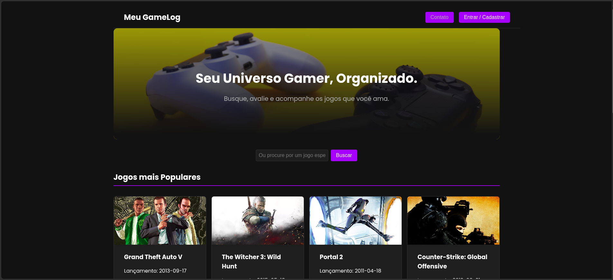

Iago Diotti
Futuro Desenvolvedor & Analista de Sistemas
Estudante de Análise e Desenvolvimento de Sistemas apaixonado por tecnologia e focado em construir uma carreira sólida na área de desenvolvimento.
Vamos ConversarSobre Mim
Olá! Sou o Iago, um entusiasta da tecnologia atualmente no segundo semestre de Análise e Desenvolvimento de Sistemas. Desde que comecei a graduação, meu interesse pela programação só cresce. Gosto de entender como as coisas funcionam e de usar a lógica para criar soluções. Estou sempre em busca de novos conhecimentos e desafios para me desenvolver como profissional.
Habilidades
Estas são algumas das tecnologias e conceitos com os quais já tive contato e estou aprofundando meus estudos:
Estudando Atualmente (2º Semestre de ADS)
Estes são os tópicos que estou explorando agora na faculdade, conectando a teoria com a prática para construir uma base sólida.
Banco de Dados
Aprendendo a modelar e estruturar informações de forma lógica e eficiente. Na prática, estou utilizando a linguagem SQL para criar, consultar e gerenciar dados, aprofundando em conceitos como normalização, chaves (primárias e estrangeiras) e relacionamentos para garantir a integridade dos sistemas.
Front End
Aprofundando os conhecimentos em HTML, CSS e JavaScript para criar interfaces web modernas e interativas. O foco está na manipulação dinâmica de elementos da página (DOM), no desenvolvimento de layouts responsivos com Flexbox e Grid, e no consumo de APIs para buscar e exibir dados de fontes externas.
Inteligência Artificial e Análise de Dados
Explorando os fundamentos da I.A. e como os dados podem gerar insights valiosos. Estou tendo contato com Python e bibliotecas como Pandas e NumPy para manipulação e análise de dados, além de compreender os conceitos por trás de algoritmos de Machine Learning e sua aplicação na resolução de problemas.
Princípios de Segurança e Redes de Computadores
Compreendendo a arquitetura da internet, desde o funcionamento de protocolos como TCP/IP e HTTP, até os princípios da Segurança da Informação. O estudo abrange a importância da criptografia, firewalls e a identificação de vulnerabilidades para o desenvolvimento de aplicações mais seguras.
Minha Jornada de Aprendizagem
Como ainda não tenho projetos complexos, quero compartilhar o que estou construindo e aprendendo. Este próprio site é meu primeiro grande projeto!
1. Este Portfólio
Objetivo: Criar uma página profissional do zero para apresentar minhas habilidades.
O que aprendi: Estruturação com HTML semântico, estilização com Flexbox para layout responsivo e o fluxo de trabalho completo com Git e GitHub Pages para publicação.
Tecnologias: HTML5, CSS3, Git, GitHub.
Ver o código no GitHub2. GameLog - Aplicação Full-Stack
Objetivo: Construir uma aplicação web completa, do zero, para aplicar e aprofundar os conhecimentos do segundo semestre em um projeto prático e complexo.
O que aprendi:
- Backend: Criação de uma API RESTful com Node.js e Express, autenticação de usuários com JWT, e comunicação com um banco de dados PostgreSQL (Supabase).
- Frontend: Desenvolvimento de uma Single-Page Application (SPA) com React, utilizando Hooks, Context API para estado global e React Router para navegação.
- Integração e Deploy: Conexão entre cliente e servidor, integração com APIs de terceiros (RAWG) e o processo completo de deploy na Vercel e Render.
Tecnologias: React, Node.js, Express, PostgreSQL, Supabase, JWT, Git, CSS3, Vite.
Ver o código no GitHub 